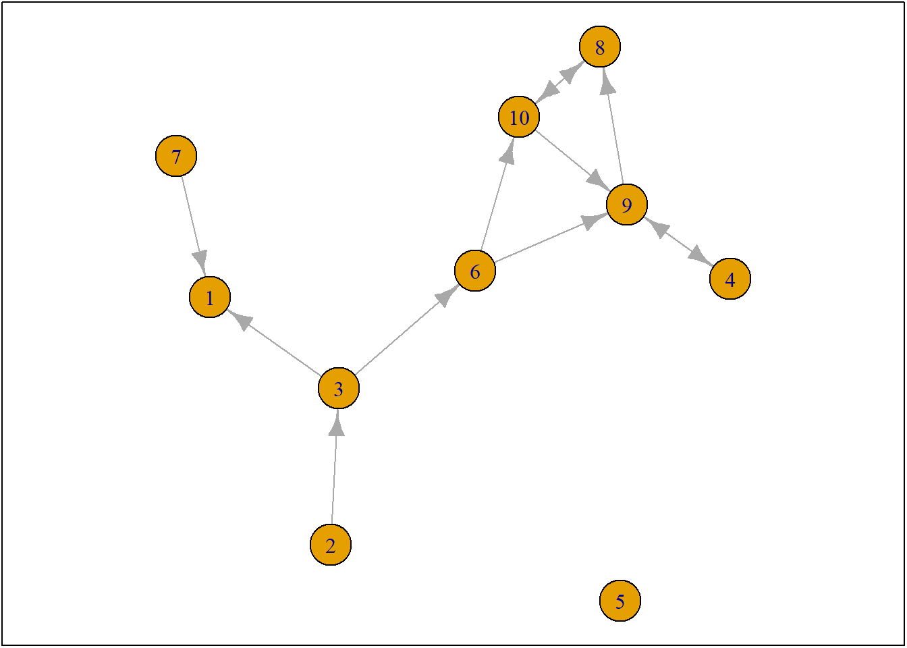
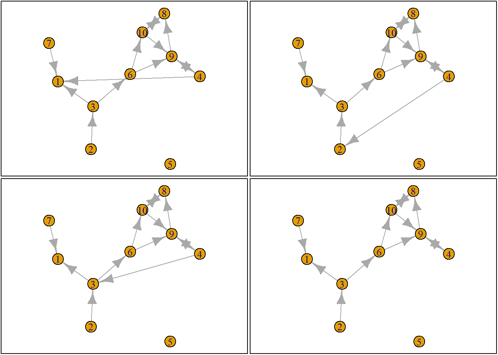
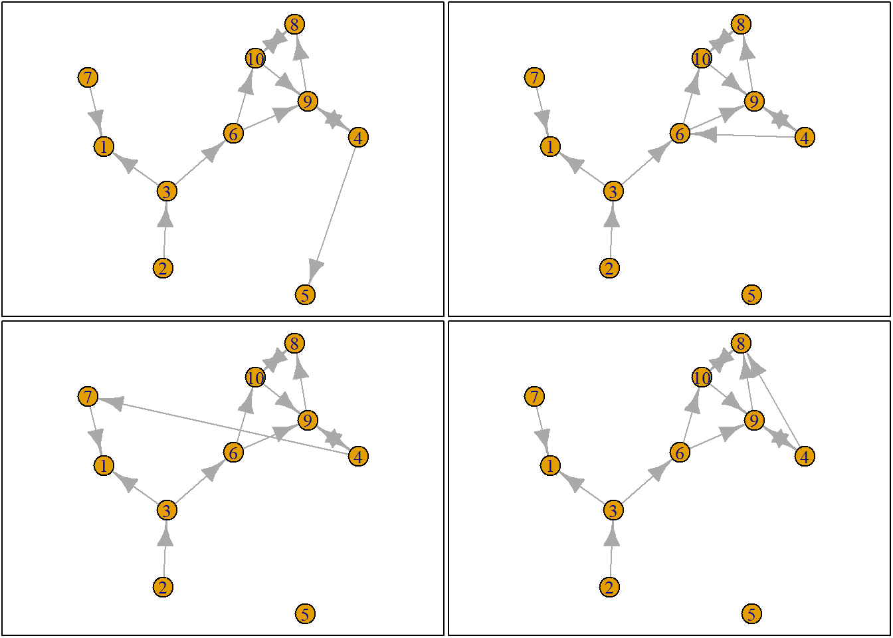
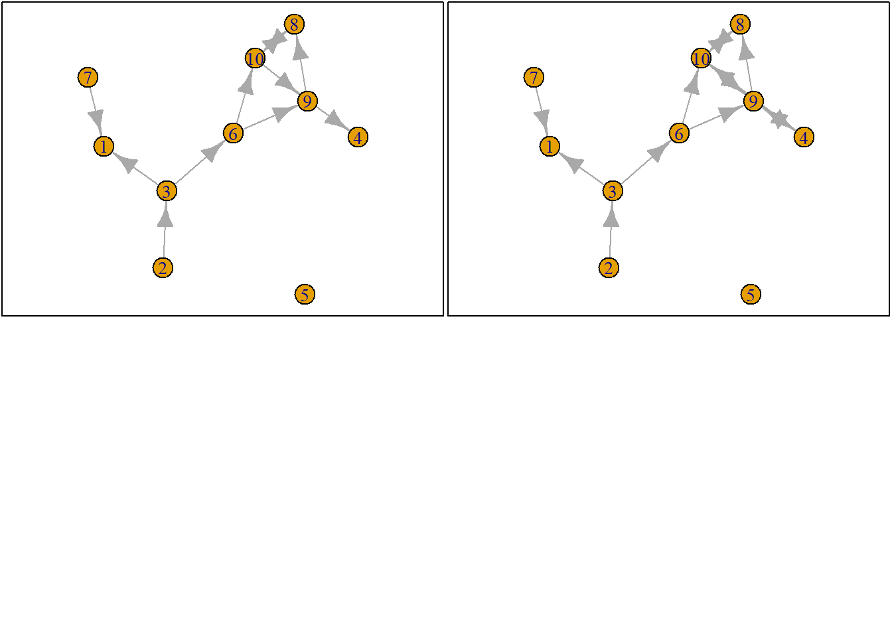
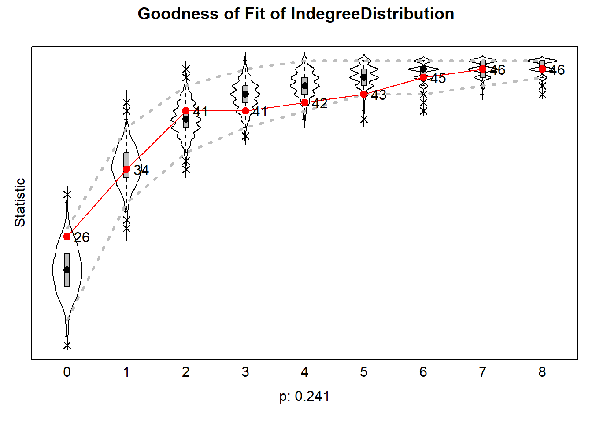
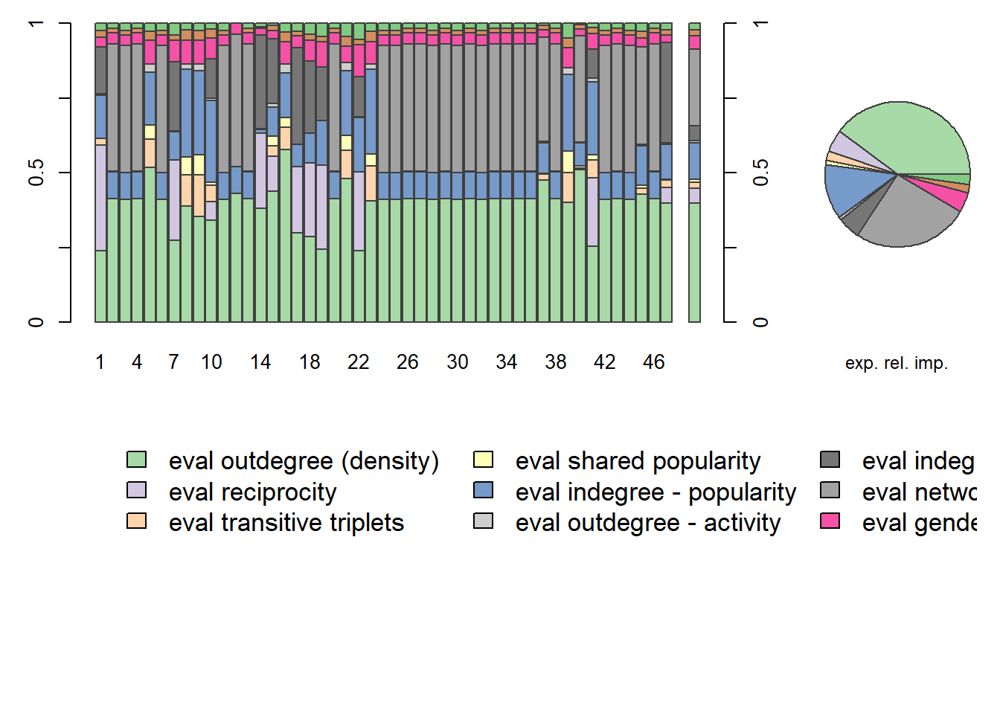
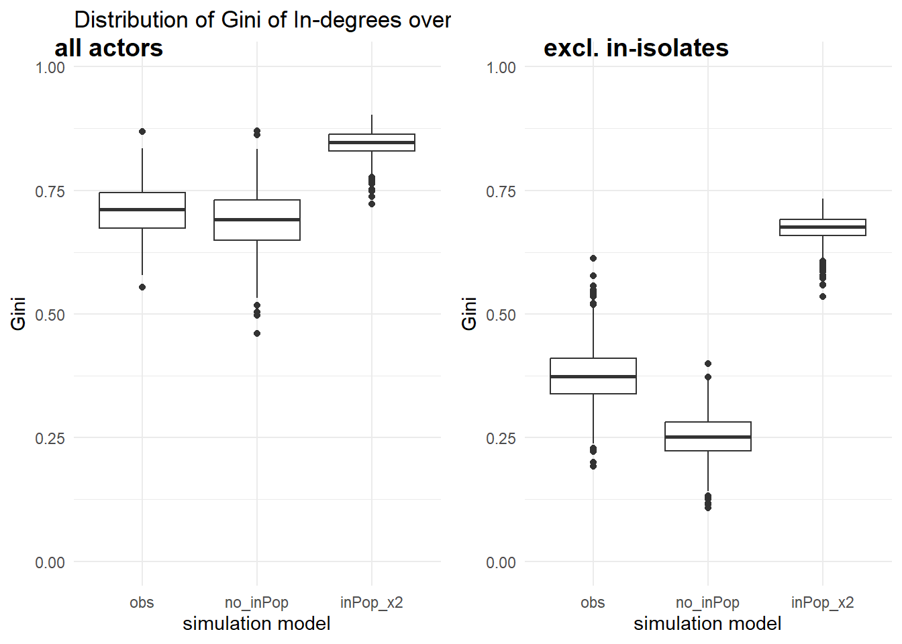

Copy-paste the following:
rm(list = ls())
fpackage.check <- function(packages) {
lapply(packages, FUN = function(x) {
if (!require(x, character.only = TRUE)) {
install.packages(x, dependencies = TRUE)
library(x, character.only = TRUE)
}
})
}
fsave <- function(x, file = NULL, location = "./data/processed/") {
ifelse(!dir.exists("data"), dir.create("data"), FALSE)
ifelse(!dir.exists("data/processed"), dir.create("data/processed"), FALSE)
if (is.null(file))
file = deparse(substitute(x))
datename <- substr(gsub("[:-]", "", Sys.time()), 1, 8)
totalname <- paste(location, datename, file, ".rda", sep = "")
save(x, file = totalname) #need to fix if file is reloaded as input name, not as x.
}
fload <- function(filename) {
load(filename)
get(ls()[ls() != "filename"])
}
fshowdf <- function(x, ...) {
knitr::kable(x, digits = 2, "html", ...) %>%
kableExtra::kable_styling(bootstrap_options = c("striped", "hover")) %>%
kableExtra::scroll_box(width = "100%", height = "300px")
}
colorize <- function(x, color) {
sprintf("<span style='color: %s;'>%s</span>", color, x)
}Downloads uninstalled packages, saves everything based on date.
More packages:
packages = c("RSiena", "devtools", "igraph")
fpackage.check(packages)## Loading required package: RSiena## Warning: package 'RSiena' was built under R version 4.5.3## Loading required package: devtools## Warning: package 'devtools' was built under R version 4.5.3## Loading required package: usethis## Warning: package 'usethis' was built under R version 4.5.3## Loading required package: igraph## Warning: package 'igraph' was built under R version 4.5.3##
## Attaching package: 'igraph'## The following objects are masked from 'package:stats':
##
## decompose, spectrum## The following object is masked from 'package:base':
##
## union## [[1]]
## NULL
##
## [[2]]
## NULL
##
## [[3]]
## NULL#devtools::install_github('JochemTolsma/RsienaTwoStep', build_vignettes=TRUE)
packages = c("RsienaTwoStep")
fpackage.check(packages)## Loading required package: RsienaTwoStep## Loading required package: foreach## Warning: package 'foreach' was built under R version 4.5.2## [[1]]
## NULLlibrary(igraph)
net1g <- graph_from_adjacency_matrix(ts_net1, mode = "directed")
coords <- layout_(net1g, nicely()) #let us keep the layout
par(mar = c(0.1, 0.1, 0.1, 0.1))
{
plot.igraph(net1g, layout = coords)
graphics::box()
}
set.seed(24553253)
ego <- ts_select(net = ts_net1)
ego## [1] 4What are the options:
options <- ts_alternatives_ministep(net = ts_net1, ego = ego)
options## [[1]]
## [,1] [,2] [,3] [,4] [,5] [,6] [,7] [,8] [,9] [,10]
## [1,] 0 0 0 0 0 0 0 0 0 0
## [2,] 0 0 1 0 0 0 0 0 0 0
## [3,] 1 0 0 0 0 1 0 0 0 0
## [4,] 1 0 0 0 0 0 0 0 1 0
## [5,] 0 0 0 0 0 0 0 0 0 0
## [6,] 0 0 0 0 0 0 0 0 1 1
## [7,] 1 0 0 0 0 0 0 0 0 0
## [8,] 0 0 0 0 0 0 0 0 0 1
## [9,] 0 0 0 1 0 0 0 1 0 0
## [10,] 0 0 0 0 0 0 0 1 1 0
##
## [[2]]
## [,1] [,2] [,3] [,4] [,5] [,6] [,7] [,8] [,9] [,10]
## [1,] 0 0 0 0 0 0 0 0 0 0
## [2,] 0 0 1 0 0 0 0 0 0 0
## [3,] 1 0 0 0 0 1 0 0 0 0
## [4,] 0 1 0 0 0 0 0 0 1 0
## [5,] 0 0 0 0 0 0 0 0 0 0
## [6,] 0 0 0 0 0 0 0 0 1 1
## [7,] 1 0 0 0 0 0 0 0 0 0
## [8,] 0 0 0 0 0 0 0 0 0 1
## [9,] 0 0 0 1 0 0 0 1 0 0
## [10,] 0 0 0 0 0 0 0 1 1 0
##
## [[3]]
## [,1] [,2] [,3] [,4] [,5] [,6] [,7] [,8] [,9] [,10]
## [1,] 0 0 0 0 0 0 0 0 0 0
## [2,] 0 0 1 0 0 0 0 0 0 0
## [3,] 1 0 0 0 0 1 0 0 0 0
## [4,] 0 0 1 0 0 0 0 0 1 0
## [5,] 0 0 0 0 0 0 0 0 0 0
## [6,] 0 0 0 0 0 0 0 0 1 1
## [7,] 1 0 0 0 0 0 0 0 0 0
## [8,] 0 0 0 0 0 0 0 0 0 1
## [9,] 0 0 0 1 0 0 0 1 0 0
## [10,] 0 0 0 0 0 0 0 1 1 0
##
## [[4]]
## [,1] [,2] [,3] [,4] [,5] [,6] [,7] [,8] [,9] [,10]
## [1,] 0 0 0 0 0 0 0 0 0 0
## [2,] 0 0 1 0 0 0 0 0 0 0
## [3,] 1 0 0 0 0 1 0 0 0 0
## [4,] 0 0 0 0 0 0 0 0 1 0
## [5,] 0 0 0 0 0 0 0 0 0 0
## [6,] 0 0 0 0 0 0 0 0 1 1
## [7,] 1 0 0 0 0 0 0 0 0 0
## [8,] 0 0 0 0 0 0 0 0 0 1
## [9,] 0 0 0 1 0 0 0 1 0 0
## [10,] 0 0 0 0 0 0 0 1 1 0
##
## [[5]]
## [,1] [,2] [,3] [,4] [,5] [,6] [,7] [,8] [,9] [,10]
## [1,] 0 0 0 0 0 0 0 0 0 0
## [2,] 0 0 1 0 0 0 0 0 0 0
## [3,] 1 0 0 0 0 1 0 0 0 0
## [4,] 0 0 0 0 1 0 0 0 1 0
## [5,] 0 0 0 0 0 0 0 0 0 0
## [6,] 0 0 0 0 0 0 0 0 1 1
## [7,] 1 0 0 0 0 0 0 0 0 0
## [8,] 0 0 0 0 0 0 0 0 0 1
## [9,] 0 0 0 1 0 0 0 1 0 0
## [10,] 0 0 0 0 0 0 0 1 1 0
##
## [[6]]
## [,1] [,2] [,3] [,4] [,5] [,6] [,7] [,8] [,9] [,10]
## [1,] 0 0 0 0 0 0 0 0 0 0
## [2,] 0 0 1 0 0 0 0 0 0 0
## [3,] 1 0 0 0 0 1 0 0 0 0
## [4,] 0 0 0 0 0 1 0 0 1 0
## [5,] 0 0 0 0 0 0 0 0 0 0
## [6,] 0 0 0 0 0 0 0 0 1 1
## [7,] 1 0 0 0 0 0 0 0 0 0
## [8,] 0 0 0 0 0 0 0 0 0 1
## [9,] 0 0 0 1 0 0 0 1 0 0
## [10,] 0 0 0 0 0 0 0 1 1 0
##
## [[7]]
## [,1] [,2] [,3] [,4] [,5] [,6] [,7] [,8] [,9] [,10]
## [1,] 0 0 0 0 0 0 0 0 0 0
## [2,] 0 0 1 0 0 0 0 0 0 0
## [3,] 1 0 0 0 0 1 0 0 0 0
## [4,] 0 0 0 0 0 0 1 0 1 0
## [5,] 0 0 0 0 0 0 0 0 0 0
## [6,] 0 0 0 0 0 0 0 0 1 1
## [7,] 1 0 0 0 0 0 0 0 0 0
## [8,] 0 0 0 0 0 0 0 0 0 1
## [9,] 0 0 0 1 0 0 0 1 0 0
## [10,] 0 0 0 0 0 0 0 1 1 0
##
## [[8]]
## [,1] [,2] [,3] [,4] [,5] [,6] [,7] [,8] [,9] [,10]
## [1,] 0 0 0 0 0 0 0 0 0 0
## [2,] 0 0 1 0 0 0 0 0 0 0
## [3,] 1 0 0 0 0 1 0 0 0 0
## [4,] 0 0 0 0 0 0 0 1 1 0
## [5,] 0 0 0 0 0 0 0 0 0 0
## [6,] 0 0 0 0 0 0 0 0 1 1
## [7,] 1 0 0 0 0 0 0 0 0 0
## [8,] 0 0 0 0 0 0 0 0 0 1
## [9,] 0 0 0 1 0 0 0 1 0 0
## [10,] 0 0 0 0 0 0 0 1 1 0
##
## [[9]]
## [,1] [,2] [,3] [,4] [,5] [,6] [,7] [,8] [,9] [,10]
## [1,] 0 0 0 0 0 0 0 0 0 0
## [2,] 0 0 1 0 0 0 0 0 0 0
## [3,] 1 0 0 0 0 1 0 0 0 0
## [4,] 0 0 0 0 0 0 0 0 0 0
## [5,] 0 0 0 0 0 0 0 0 0 0
## [6,] 0 0 0 0 0 0 0 0 1 1
## [7,] 1 0 0 0 0 0 0 0 0 0
## [8,] 0 0 0 0 0 0 0 0 0 1
## [9,] 0 0 0 1 0 0 0 1 0 0
## [10,] 0 0 0 0 0 0 0 1 1 0
##
## [[10]]
## [,1] [,2] [,3] [,4] [,5] [,6] [,7] [,8] [,9] [,10]
## [1,] 0 0 0 0 0 0 0 0 0 0
## [2,] 0 0 1 0 0 0 0 0 0 0
## [3,] 1 0 0 0 0 1 0 0 0 0
## [4,] 0 0 0 0 0 0 0 0 1 1
## [5,] 0 0 0 0 0 0 0 0 0 0
## [6,] 0 0 0 0 0 0 0 0 1 1
## [7,] 1 0 0 0 0 0 0 0 0 0
## [8,] 0 0 0 0 0 0 0 0 0 1
## [9,] 0 0 0 1 0 0 0 1 0 0
## [10,] 0 0 0 0 0 0 0 1 1 0plots <- lapply(options, graph_from_adjacency_matrix, mode = "directed")
par(mar = c(0, 0, 0, 0) + 0.1)
par(mfrow = c(2, 2))
fplot <- function(x) {
plot.igraph(x, layout = coords, margin = 0)
graphics::box()
}
lapply(plots, fplot)

## [[1]]
## NULL
##
## [[2]]
## NULL
##
## [[3]]
## NULL
##
## [[4]]
## NULL
##
## [[5]]
## NULL
##
## [[6]]
## NULL
##
## [[7]]
## NULL
##
## [[8]]
## NULL
##
## [[9]]
## NULL
##
## [[10]]
## NULL
How to choose between options? Let’s say I like extra ties. Option with more ties is evaluated more positively. Opt for most positively evaluated option. If multiple maxima, choose randomly. But: this is deterministic (I know everything and always make the right choice), not stochastic (there is some randomness). So instead, we weigh options based on evaluation.
sapply(options, ts_degree, ego = ego) #degree for all options## [1] 2 2 2 1 2 2 2 2 0 2sapply(options, ts_recip, ego = ego) #number of reciprocated ties## [1] 1 1 1 1 1 1 1 1 0 1I decide degree and reciprocity are important statistics (characteristics of ego or ego network, or of alter). Model will try different parameters to see if they will result in a network similar to the observed network at t2. You add up the benefits and downsides on all effects for each option, which results in a certain likelihood(?) of this option being chosen.
option <- 4
ts_degree(options[[option]], ego = ego) * -1 + ts_recip(options[[option]], ego = ego) * 1.5## [1] 0.5The above is the agent’s evaluation of option 4 (based on degree and reciprocity).
Doing that for all networks:
eval <- sapply(options, FUN = ts_eval, ego = ego, statistics = list(ts_degree, ts_recip), parameters = c(-1,
1.5))
eval## [1] -0.5 -0.5 -0.5 0.5 -0.5 -0.5 -0.5 -0.5 0.0 -0.5print("network with maximum evaluation score:")## [1] "network with maximum evaluation score:"which.max(eval)## [1] 4This shows that option 4 is evaluated most positively, and therefore most likely to be chosen (but stochastic not deterministic, so other options are still possible - just less likely) We weigh likelihood based on McFadden’s choice function. All options need to have a chance between 0 and 1, sum of all chances should be 1. Probability of choosing i = exp of evaluation score, divided by the sum of the chances of each of the alternatives
choice <- sample(1:length(eval), size = 1, prob = exp(eval)/sum(exp(eval)))
print("choice:")## [1] "choice:"choice## [1] 10# print('network:') options[[choice]]Repeat very very often. Choice of next agent is dependent on choice of previous agent. Common stopping rule approach: add it as a parameter (try if we get there with 2 tie changes per actor, or with 3, etc)
Interpretation
More strongly positive parameter: actors on average find variable more important in making decision (so interpretation is on micro level!) Negative parameter: actors try to avoid this Hypothesis should be about out-degrees, not in-degrees Usually one tie change influences lots of different things simultaneously (degree, but also for example reciprocity)
For end project: show that you can interpret effects. Start simple: positive or negative, then compare with other effects. Usually degree parameter is negative, because chance of there being a tie is lower than chance of no tie (density in network is lower than 0.5)
fpackage.check <- function(packages) {
lapply(packages, FUN = function(x) {
if (!require(x, character.only = TRUE)) {
install.packages(x, dependencies = TRUE)
library(x, character.only = TRUE)
}
})
}
fsave <- function(x, file = NULL, location = "./data/processed/") {
ifelse(!dir.exists("data"), dir.create("data"), FALSE)
ifelse(!dir.exists("data/processed"), dir.create("data/processed"), FALSE)
if (is.null(file))
file = deparse(substitute(x))
datename <- substr(gsub("[:-]", "", Sys.time()), 1, 8)
totalname <- paste(location, datename, file, ".rda", sep = "")
save(x, file = totalname) #need to fix if file is reloaded as input name, not as x.
}
fload <- function(filename) {
load(filename)
get(ls()[ls() != "filename"])
}
fshowdf <- function(x, ...) {
knitr::kable(x, digits = 2, "html", ...) %>%
kableExtra::kable_styling(bootstrap_options = c("striped", "hover")) %>%
kableExtra::scroll_box(width = "100%", height = "300px")
}
# this is the most important one. We created it in the previous script
f_pubnets <- function(df_scholars = df, list_publications = publications, discip = "sociology", affiliation = "RU",
waves = list(wave1 = c(2018, 2019, 2020), wave2 = c(2021, 2022, 2023))) {
publications <- list_publications %>%
bind_rows() %>%
distinct(title, .keep_all = TRUE)
df_scholars %>%
filter(affil1 == affiliation | affil2 == affiliation) %>%
filter(discipline == discip) -> df_sel
networklist <- list()
for (wave in 1:length(waves)) {
networklist[[wave]] <- matrix(0, nrow = nrow(df_sel), ncol = nrow(df_sel))
}
publicationlist <- list()
for (wave in 1:length(waves)) {
publicationlist[[wave]] <- publications %>%
filter(gs_id %in% df_sel$gs_id) %>%
filter(year %in% waves[[wave]]) %>%
select(author) %>%
lapply(str_split, pattern = ",")
}
publicationlist2 <- list()
for (wave in 1:length(waves)) {
publicationlist2[[wave]] <- publicationlist[[wave]]$author %>%
# lowercase
lapply(tolower) %>%
# Removing diacritics
lapply(stri_trans_general, id = "latin-ascii") %>%
# only last name
lapply(word, start = -1, sep = " ") %>%
# only last last name
lapply(word, start = -1, sep = "-")
}
for (wave in 1:length(waves)) {
# let us remove all publications with only one author
remove <- which(sapply(publicationlist2[[wave]], FUN = function(x) length(x) == 1) == TRUE)
publicationlist2[[wave]] <- publicationlist2[[wave]][-remove]
}
for (wave in 1:length(waves)) {
pubs <- publicationlist2[[wave]]
for (ego in 1:nrow(df_sel)) {
# which ego?
lastname_ego <- df_sel$lastname[ego]
# for all publications
for (pub in 1:length(pubs)) {
# only continue if ego is author of pub
if (lastname_ego %in% pubs[[pub]]) {
aut_pot <- which.max(pubs[[pub]] %in% lastname_ego)
# only continue if ego is first author of pub
if (aut_pot == 1) {
# check all alters/co-authors
for (alter in 1:nrow(df_sel)) {
# which alter
lastname_alter <- df_sel$lastname[alter]
if (lastname_alter %in% pubs[[pub]]) {
networklist[[wave]][ego, alter] <- networklist[[wave]][ego, alter] + 1
}
}
}
}
}
}
}
return(list(df = df_sel, network = networklist))
}
packages = c("RSiena", "tidyverse", "stringdist", "stringi")
fpackage.check(packages)## Loading required package: tidyverse## Warning: package 'tidyverse' was built under R version 4.5.3## Warning: package 'tibble' was built under R version 4.5.3## Warning: package 'tidyr' was built under R version 4.5.3## Warning: package 'readr' was built under R version 4.5.2## Warning: package 'dplyr' was built under R version 4.5.3## Warning: package 'stringr' was built under R version 4.5.3## Warning: package 'forcats' was built under R version 4.5.2## ── Attaching core tidyverse packages ─────────────── tidyverse 2.0.0 ──
## ✔ dplyr 1.2.1 ✔ readr 2.1.6
## ✔ forcats 1.0.1 ✔ stringr 1.6.0
## ✔ ggplot2 4.0.0 ✔ tibble 3.3.1
## ✔ lubridate 1.9.4 ✔ tidyr 1.3.2
## ✔ purrr 1.1.0## ── Conflicts ───────────────────────────────── tidyverse_conflicts() ──
## ✖ lubridate::%--%() masks igraph::%--%()
## ✖ purrr::accumulate() masks foreach::accumulate()
## ✖ dplyr::as_data_frame() masks tibble::as_data_frame(), igraph::as_data_frame()
## ✖ purrr::compose() masks igraph::compose()
## ✖ tidyr::crossing() masks igraph::crossing()
## ✖ dplyr::filter() masks stats::filter()
## ✖ dplyr::lag() masks stats::lag()
## ✖ purrr::simplify() masks igraph::simplify()
## ✖ purrr::when() masks foreach::when()
## ℹ Use the conflicted package (<http://conflicted.r-lib.org/>) to force all conflicts to become errors
## Loading required package: stringdist## Warning: package 'stringdist' was built under R version 4.5.2##
## Attaching package: 'stringdist'
##
## The following object is masked from 'package:tidyr':
##
## extract
##
## Loading required package: stringi## Warning: package 'stringi' was built under R version 4.5.3## [[1]]
## NULL
##
## [[2]]
## NULL
##
## [[3]]
## NULL
##
## [[4]]
## NULLFirst figure out where your network is!
df <- fload("./data/20230621df_complete.rda")
publications <- fload("./data/20230621list_publications_jt.rda")
output <- f_pubnets()
df_soc <- output[[1]]
df_network <- output[[2]]
view(df_soc)
view(df_network)Separate the waves:
wave1 <- df_network[[1]]
wave2 <- df_network[[2]]
# let us put the diagonal to zero
diag(wave1) <- 0
diag(wave2) <- 0
# we want a binary tie (not a weighted tie)
wave1[wave1 > 1] <- 1
wave2[wave2 > 1] <- 1
# put the nets in an array
net_soc_array <- array(data = c(wave1, wave2), dim = c(dim(wave1), 2)) #2 is the number of waves
# dependent
net <- sienaDependent(net_soc_array)Adding another variable
# gender
gender <- as.numeric(df_soc$gender == "female") #1 if f, 0 if m
gender <- coCovar(gender) #constant covariate
mydata <- sienaDataCreate(net, gender)Now we have our data object!
Time for the effects:
myeff <- getEffects(mydata)
effectsDocumentation(myeff)## Effects documentation written to file myeff.html .ifelse(!dir.exists("results"), dir.create("results"), FALSE)## [1] FALSEprint01Report(mydata, modelname = "./results/soc_init")myeff <- includeEffects(myeff, isolateNet, inPop, outAct, inAct, transTrip) #adding the effects of interest## effectNumber effectName shortName include fix test initialValue parm
## 1 21 transitive triplets transTrip TRUE FALSE FALSE 0 0
## 2 78 indegree - popularity inPop TRUE FALSE FALSE 0 0
## 3 115 outdegree - activity outAct TRUE FALSE FALSE 0 0
## 4 124 indegree - activity(#) inAct TRUE FALSE FALSE 0 1
## 5 158 network-isolate isolateNet TRUE FALSE FALSE 0 0myeff <- includeEffects(myeff, sameX, egoX, altX, interaction1 = "gender") #we're specifying that x means gender. Nothing to do with interaction effects!## effectNumber effectName shortName include fix test initialValue parm
## 1 262 gender alter altX TRUE FALSE FALSE 0 0
## 2 277 gender ego egoX TRUE FALSE FALSE 0 0
## 3 333 same gender sameX TRUE FALSE FALSE 0 0myAlgorithm <- sienaAlgorithmCreate(projname = "soc_init")## If you use this algorithm object, siena07 will create/use an output file soc_init.txt .(ans <- siena07(myAlgorithm, data = mydata, effects = myeff))## Estimates, standard errors and convergence t-ratios
##
## Estimate Standard Convergence
## Error t-ratio
##
## Rate parameters:
## 0 Rate parameter 3.9712 ( 0.9806 )
##
## Other parameters:
## 1. eval outdegree (density) -2.4298 ( 0.7683 ) 0.1046
## 2. eval reciprocity 2.3671 ( 0.6202 ) -0.0368
## 3. eval transitive triplets 0.7984 ( 0.4311 ) 0.0459
## 4. eval indegree - popularity 0.2237 ( 0.0649 ) 0.1150
## 5. eval outdegree - activity 0.0134 ( 0.1133 ) 0.0610
## 6. eval indegree - activity(1) -0.4427 ( 0.3314 ) 0.0042
## 7. eval network-isolate 2.4442 ( 1.3575 ) -0.1067
## 8. eval gender alter -0.3888 ( 0.3132 ) -0.0576
## 9. eval gender ego 0.1290 ( 0.3769 ) 0.0040
## 10. eval same gender 0.1486 ( 0.2712 ) 0.0640
##
## Overall maximum convergence ratio: 0.1830
##
##
## Total of 2372 iteration steps.# (the outer parentheses lead to printing the obtained result on the screen) if necessary, estimate
# further
(ans <- siena07(myAlgorithm, data = mydata, effects = myeff, prevAns = ans, returnDeps = TRUE)) #estimating something based on algorithm on my data## Estimates, standard errors and convergence t-ratios
##
## Estimate Standard Convergence
## Error t-ratio
##
## Rate parameters:
## 0 Rate parameter 4.0886 ( 1.0515 )
##
## Other parameters:
## 1. eval outdegree (density) -2.5087 ( 0.7954 ) -0.0319
## 2. eval reciprocity 2.3486 ( 0.6604 ) -0.0298
## 3. eval transitive triplets 0.7940 ( 0.3808 ) 0.0031
## 4. eval indegree - popularity 0.2186 ( 0.0596 ) -0.0414
## 5. eval outdegree - activity 0.0225 ( 0.1102 ) -0.0061
## 6. eval indegree - activity(1) -0.4070 ( 0.3402 ) -0.0098
## 7. eval network-isolate 2.3835 ( 1.5464 ) -0.0192
## 8. eval gender alter -0.4119 ( 0.2946 ) 0.0400
## 9. eval gender ego 0.1742 ( 0.3677 ) 0.0669
## 10. eval same gender 0.1605 ( 0.2710 ) -0.0629
##
## Overall maximum convergence ratio: 0.1433
##
##
## Total of 2876 iteration steps.The rate parameter is the average amount of mini-steps taken per agent, which is 4.0795 in my case. Outdegree effect is quite strongly negative, so we have a network with a low density. Reciprocity has a very strongly positive effect. Transitive triplets also seem to be quite attractive. Network isolate effect is also present (people who do not have any ties are unlikely to make or receive new ones).
Let’s try to add a new effect I guess?
myeff <- includeEffects(myeff, sharedPop)## effectNumber effectName shortName include fix test initialValue parm
## 1 75 shared popularity sharedPop TRUE FALSE FALSE 0 1myAlgorithm2 <- sienaAlgorithmCreate(projname = "soc_init")## If you use this algorithm object, siena07 will create/use an output file soc_init.txt .(ans <- siena07(myAlgorithm2, data = mydata, effects = myeff))## Estimates, standard errors and convergence t-ratios
##
## Estimate Standard Convergence
## Error t-ratio
##
## Rate parameters:
## 0 Rate parameter 4.0023 ( 0.9491 )
##
## Other parameters:
## 1. eval outdegree (density) -2.3849 ( 0.8918 ) 0.1021
## 2. eval reciprocity 2.3543 ( 0.6057 ) 0.0254
## 3. eval transitive triplets 0.7463 ( 0.4601 ) 0.1220
## 4. eval shared popularity 0.1302 ( 0.1629 ) 0.0981
## 5. eval indegree - popularity 0.2103 ( 0.0623 ) 0.0957
## 6. eval outdegree - activity -0.0075 ( 0.1274 ) 0.1133
## 7. eval indegree - activity(1) -0.4136 ( 0.3000 ) 0.0681
## 8. eval network-isolate 2.4292 ( 1.2878 ) -0.0168
## 9. eval gender alter -0.3821 ( 0.3144 ) -0.0741
## 10. eval gender ego 0.1674 ( 0.3671 ) 0.0120
## 11. eval same gender 0.1654 ( 0.2867 ) 0.0948
##
## Overall maximum convergence ratio: 0.1522
##
##
## Total of 2661 iteration steps.(ans <- siena07(myAlgorithm2, data = mydata, effects = myeff, prevAns = ans, returnDeps = TRUE)) #estimating something based on algorithm on my data## Estimates, standard errors and convergence t-ratios
##
## Estimate Standard Convergence
## Error t-ratio
##
## Rate parameters:
## 0 Rate parameter 4.0591 ( 0.9815 )
##
## Other parameters:
## 1. eval outdegree (density) -2.3568 ( 0.7138 ) -0.0192
## 2. eval reciprocity 2.3326 ( 0.5790 ) 0.0037
## 3. eval transitive triplets 0.7313 ( 0.3679 ) -0.0629
## 4. eval shared popularity 0.1256 ( 0.2034 ) -0.0490
## 5. eval indegree - popularity 0.2063 ( 0.0686 ) -0.0176
## 6. eval outdegree - activity -0.0095 ( 0.0985 ) -0.0477
## 7. eval indegree - activity(1) -0.4018 ( 0.2933 ) -0.0293
## 8. eval network-isolate 2.4788 ( 1.2515 ) -0.0065
## 9. eval gender alter -0.3859 ( 0.3050 ) 0.0042
## 10. eval gender ego 0.1628 ( 0.3579 ) -0.0239
## 11. eval same gender 0.1521 ( 0.2705 ) -0.0271
##
## Overall maximum convergence ratio: 0.1088
##
##
## Total of 2784 iteration steps.Yay I managed to add the shared popularity effect! It’s not significant :(.
Okay, now I’d like to try the whole fit thing.
First we should define the functions:
GeodesicDistribution <- function(i, data, sims, period, groupName, varName, levls = c(1:5, Inf), cumulative = TRUE,
...) {
x <- networkExtraction(i, data, sims, period, groupName, varName)
require(sna)
a <- sna::geodist(symmetrize(x))$gdist
if (cumulative) {
gdi <- sapply(levls, function(i) {
sum(a <= i)
})
} else {
gdi <- sapply(levls, function(i) {
sum(a == i)
})
}
names(gdi) <- as.character(levls)
gdi
}
testall <- function(ans) {
for (i in which(ans$test)) {
sct <- score.Test(ans, i)
cat(ans$requestedEffects$effectName[i], "\n")
print(sct)
}
invisible(score.Test(ans))
}See if it works:
gofi0 <- sienaGOF(ans, IndegreeDistribution, verbose = FALSE, join = TRUE, varName = "net")
plot(gofi0)
Okay that worked! Can I do it with something other than the in-degree distribution?
First I’ll try to calculate segregation (which is not working AAAAAAHHH)
#install.packages("netseg")
#dim(wave1)
#orwg(wave1, genderlist)
#genderlist <- as.numeric(df_soc$gender == "female")
#genderlist
#segregation <- sna::nacf(wave1, genderlist, type = "moran", neighborhood.type = "out", demean = TRUE)
#segregationOkay I’ll ask about segregation in class, because I’m not getting anywhere.
Instead, let’s take a look at relative influence.
# get parameters
theta.eval <- ans$theta
# and effects
myeff.eval <- ans$effects
# use sienaRI() --> doesn't exist. Maybe interpret_size?
RI <- interpret_size(ans, data = mydata, theta = theta.eval, effects = myeff.eval)
#plot it
plot(RI, addPieChart = TRUE) #I can't see the full legend...
Not sure how to fix the graph. For now, I’ll move on to the micro-macro thing.
#make new effects objects for simulation models
myeff_obs <- myeff
#set initial values based on estimated model
myeff_obs <- setEffect(myeff_obs, density, initialValue = ans$theta[which(ans$effects$shortName == "density")])## effectNumber effectName shortName include fix test initialValue parm
## 1 12 outdegree (density) density TRUE FALSE FALSE -2.35682 0myeff_obs <- setEffect(myeff_obs, recip, initialValue = ans$theta[which(ans$effects$shortName == "recip")])## effectNumber effectName shortName include fix test initialValue parm
## 1 15 reciprocity recip TRUE FALSE FALSE 2.33264 0myeff_obs <- setEffect(myeff_obs, transTrip, initialValue = ans$theta[which(ans$effects$shortName == "transTrip")])## effectNumber effectName shortName include fix test initialValue parm
## 1 21 transitive triplets transTrip TRUE FALSE FALSE 0.73128 0myeff_obs <- setEffect(myeff_obs, inPop, initialValue = ans$theta[which(ans$effects$shortName == "inPop")])## effectNumber effectName shortName include fix test initialValue parm
## 1 78 indegree - popularity inPop TRUE FALSE FALSE 0.20631 0myeff_obs <- setEffect(myeff_obs, outAct, initialValue = ans$theta[which(ans$effects$shortName == "outAct")])## effectNumber effectName shortName include fix test initialValue parm
## 1 115 outdegree - activity outAct TRUE FALSE FALSE -0.00948 0myeff_obs <- setEffect(myeff_obs, inAct, initialValue = ans$theta[which(ans$effects$shortName == "inAct")])## effectNumber effectName shortName include fix test initialValue parm
## 1 124 indegree - activity(1) inAct TRUE FALSE FALSE -0.40183 1myeff_obs <- setEffect(myeff_obs, isolateNet, initialValue = ans$theta[which(ans$effects$shortName == "isolateNet")])## effectNumber effectName shortName include fix test initialValue parm
## 1 158 network-isolate isolateNet TRUE FALSE FALSE 2.47884 0myeff_obs <- setEffect(myeff_obs, altX, interaction1 = "gender", initialValue = ans$theta[which(ans$effects$shortName == "altX")])## effectNumber effectName shortName include fix test initialValue parm
## 1 262 gender alter altX TRUE FALSE FALSE -0.38589 0myeff_obs <- setEffect(myeff_obs, egoX, interaction1 = "gender", initialValue = ans$theta[which(ans$effects$shortName == "egoX")])## effectNumber effectName shortName include fix test initialValue parm
## 1 277 gender ego egoX TRUE FALSE FALSE 0.16276 0myeff_obs <- setEffect(myeff_obs, sameX, interaction1 = "gender", initialValue = ans$theta[which(ans$effects$shortName == "sameX")])## effectNumber effectName shortName include fix test initialValue parm
## 1 333 same gender sameX TRUE FALSE FALSE 0.15208 0#fix effects at this value
myeff_obs$fix[myeff_obs$include == TRUE] <- TRUE
#additional models:
myeff_no <- myeff_high <- myeff_obs
#adjust inPop effect
myeff_no <- setEffect(myeff_obs, inPop, initialValue = 0, fix = TRUE)## effectNumber effectName shortName include fix test initialValue parm
## 1 78 indegree - popularity inPop TRUE TRUE FALSE 0 0myeff_high <- setEffect(myeff_obs, inPop, initialValue = ans$theta[which(ans$effects$shortName == "inPop")] * 2, fix = TRUE)## effectNumber effectName shortName include fix test initialValue parm
## 1 78 indegree - popularity inPop TRUE TRUE FALSE 0.41263 0#set up the simulation settings
nIter <- 1000 # number of iterations
sim_model <- sienaAlgorithmCreate(
projname = 'simulation',
cond = FALSE,
useStdInits = FALSE, nsub = 0,
n3 = nIter,
seed=242452, # seed for replication
simOnly = TRUE)## If you use this algorithm object, siena07 will create/use an output file simulation.txt .#make vector to store gini across models (observed, no inPop, high inPop)
#we also make vectors to calculate gini excluding the in-isolates
gini_obs <- gini_no <- gini_high <- gini_obs2 <- gini_no2 <- gini_high2 <- rep(0, nIter)
# simulation using estimated parameters
sim_ans_obs <- siena07(sim_model, # simulation settings
data = mydata, # data
effects = myeff_obs,# defined effects and set parameters
returnDeps = TRUE) # return simulated networks
sim_ans_no <- siena07(sim_model, # simulation settings
data = mydata, # data
effects = myeff_no,# defined effects and set parameters
returnDeps = TRUE) # return simulated networks
sim_ans_high <- siena07(sim_model, # simulation settings
data = mydata, # data
effects = myeff_high,# defined effects and set parameters
returnDeps = TRUE) # return simulated networks
#extract gini from simulation runs
#no. of actors
n <- length(mydata$nodeSets[[1]])
#install.packages("DescTools")
library(DescTools)## Warning: package 'DescTools' was built under R version 4.5.3##
## Attaching package: 'DescTools'## The following object is masked from 'package:foreach':
##
## %:%## The following object is masked from 'package:igraph':
##
## %c%#observed model
for (i in 1:nIter) {
#create empty adjacency matrix
adj <- matrix(0, n, n)
#shorter notation for edge list for iteration i
edges <- sim_ans_obs$sims[[i]][[1]][[1]][[1]]
#The numbering is as follows: first the number of the simulation run (i); then the number of the group (1 in the usual case of single-group data structures); then the number of the dependent variable (here 1, because it is supposed that there only is a dependent network); then the period number (i.e., wave number minus 1).
#str(sim_ans_high$sims[[i]])
#put edge values in desired place
adj[edges[, 1:2]] <- edges[, 3]
#count number of indegrees
indegs <- colSums(adj)
gini_obs[i] <- DescTools::Gini(indegs)
#exclude the 0s
gini_obs2[i] <- DescTools::Gini(indegs[!indegs==0])
}
#no inPop model
for (i in 1:nIter) {
#create empty adjacency matrix
adj <- matrix(0, n, n)
#shorter notation for edge list for iteration i
edges <- sim_ans_no$sims[[i]][[1]][[1]][[1]]
#put edge values in desired place
adj[edges[, 1:2]] <- edges[, 3]
#count number of indegrees
indegs <- colSums(adj)
gini_no[i] <- DescTools::Gini(indegs)
#exclude the 0s
gini_no2[i] <- DescTools::Gini(indegs[!indegs==0])
}
#high inPop model
for (i in 1:nIter) {
#create empty adjacency matrix
adj <- matrix(0, n, n)
#shorter notation for edge list for iteration i
edges <- sim_ans_high$sims[[i]][[1]][[1]][[1]]
#put edge values in desired place
adj[edges[, 1:2]] <- edges[, 3]
#count number of indegrees
indegs <- colSums(adj)
gini_high[i] <- DescTools::Gini(indegs)
#exclude the 0s
gini_high2[i] <- DescTools::Gini(indegs[!indegs==0])
}
plotdata <- data.frame(condition = c(rep("obs", nIter), rep("no_inPop", nIter), rep("inPop_x2", nIter)),
gini = c(gini_obs, gini_no, gini_high))
plotdata$condition <- factor(plotdata$condition, levels = c("obs", "no_inPop", "inPop_x2"))
#exclude in-isolates
plotdata2 <- data.frame(condition = c(rep("obs", nIter), rep("no_inPop", nIter), rep("inPop_x2", nIter)),
gini = c(gini_obs2, gini_no2, gini_high2))
plotdata2$condition <- factor(plotdata$condition, levels = c("obs", "no_inPop", "inPop_x2"))
p1 <- ggplot(plotdata, aes(x = condition, y = gini)) +
geom_boxplot() +
labs(title = "Distribution of Gini of In-degrees over 1000 iterations, across simulation models",
x = "simulation model",
y = "Gini") +
ylim(0,1) +
theme_minimal()
p2 <- ggplot(plotdata2, aes(x = condition, y = gini)) +
geom_boxplot() +
labs(x = "simulation model",
y = "Gini") +
ylim(0,1) +
theme_minimal()
#install.packages("ggpubr")
library(ggpubr)## Warning: package 'ggpubr' was built under R version 4.5.3ggpubr::ggarrange(p1,p2, align = "h", labels = c("all actors", "excl. in-isolates"), vjust = 3)
I like this! Fun graph. Might be interesting to use in final projectTo do for next time: look at RSiena manual and read chapters, look at relative influence, update RQs and list of required data